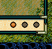

void カスタム::On_ターン変更《攻城中画面》(int ターン数) {
}

void カスタム::On_ターン変更《攻城中画面》(int ターン数) {
/*
攻城戦でターン１開始の時、今この攻城に出陣している部隊の兵士数が+1
*/
if ( ターン数 == 1 ) {
// 現在表示中の攻城戦に出陣している武将番号配列用のリストを得る。
番号リスト型 blist = Get_出陣中の武将番号リスト【配列用】《表示中マップ》();
// それら出陣中の武将に対して
for each ( int iBushouID in blist ) {
// 兵数がまだあるならば、そして、その武将が持つべき最大兵数より少ないならば、兵数を１増やす
if ( 0 < p武将情報[iBushouID].兵数 && p武将情報[iBushouID].兵数 < Get_武将最大兵数(iBushouID) ) {
p武将情報[iBushouID].兵数++;
}
}
}
}
int iAttackGundanID = -1;
void カスタム::On_戦争開始(戦争開始パラメタ型 パラメタ) {
// 攻撃側の軍団を控えておく
iAttackGundanID = パラメタ.攻撃側軍団【軍団番号】-1;
}
void カスタム::On_ターン変更《攻城中画面》(int ターン数) {
/*
３ターン終了時に攻める側の武将が話す。
*/
if ( ターン数 == 4 ) {
int iAttackBushouID = -1; // 攻撃側話者武将
番号リスト型 blist = Get_出陣中の武将番号リスト【配列用】《表示中マップ》();
srand(timeGetTime()); // random_shuffleには必要。
random_shuffle( blist.begin(), blist.end() ); // ランダムシャッフル
for each ( int iBushouID in blist ) {
// この武将の大名勢力が、攻撃側軍団の大名勢力と等しい
if ( p武将情報[iBushouID].所属大名【大名番号】== p軍団情報[iAttackGundanID].所属大名【大名番号】) {
iAttackBushouID = iBushouID; // 攻撃側話者に設定
break;
}
}
// 噴出の左上か右下か、武将のユニットのポジションを考慮する
ヘックス位置型 posA;
posA = Get_武将の攻城戦ヘックス位置(iAttackBushouID);
int iCastleID = Get_攻城戦中の城番号() - 1; // 城番号→城番号【配列用】
if ( 0 <= iCastleID && iCastleID < 最大数::城情報::配列数 ) {
string message = "むむ…\x0A未だ"+Get_城名(iCastleID)+Get_城称(iCastleID)+"は\x0A陥落せぬか…";
if ( posA.Ｙ <= 攻城戦ヘックス::中心Ｙ ) {
噴出ダイアログ《通常・左上》開始( iAttackBushouID, message );
噴出ダイアログ《通常・左上》終了();
// それ以外は攻撃側が右下を使う
} else {
噴出ダイアログ《通常・右下》開始( iAttackBushouID, message );
噴出ダイアログ《通常・右下》終了();
}
}
}
}